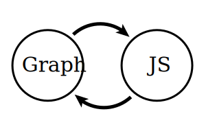

This is a graph

This is a Multigraph

GraphJS is a framework for representing mathematical graphs in JavaScript. It is more or less a direct port of the popular NetworkX Python library. Such JavaScript, very math, etc. etc.
The entire library ships in a single file. You can include this directly in Node.JS or within the Browser.
node.js:
npm install GraphJS
GraphJS = require('GraphJS'); // or require('./graph.min.js')
browser:
<script src='graph.min.js'></script>
<script>
var g = GraphJS.Graph();
</script>
No external dependencies are required.
Note: this feature is not quite ready yet.
The source is written in CoffeeScript. If you only need a few classes/algorithms from GraphJS, you can build GraphJS to only include the features you want.
To compile for the browser, install browserify and coffeeify and build using the following:
$ browserify -t coffeeify --extension=".coffee" index.coffee > graph.min.js
Choose which type of graph is best suited for your application:
Graph: undirected graph with self-loops (basic)DiGraph: directed graph with self-loopsMultiGraph: undirected graphs with self loops and parallel edgesMultiDiGraph: directed graph with self loops and parallel edges|
This is a graph |
This is a Multigraph |
Modeling a social network is easy:
var SocialNetworkClass = function() {
// redefining nodes as people and edges as relationships
this.people = this.node;
this.relationships = this.adj;
}
SocialNetwork.prototype = new GraphJS.classes.Graph();
SocialNetwork.prototype.constructor = SocialNetwork;
var exampleNetwork = new SocialNetwork();
TODO
GraphJS is developed in my spare time, and usually out of necessity for a graph algorithm or two in some other project of mine. You can support this project in several ways: